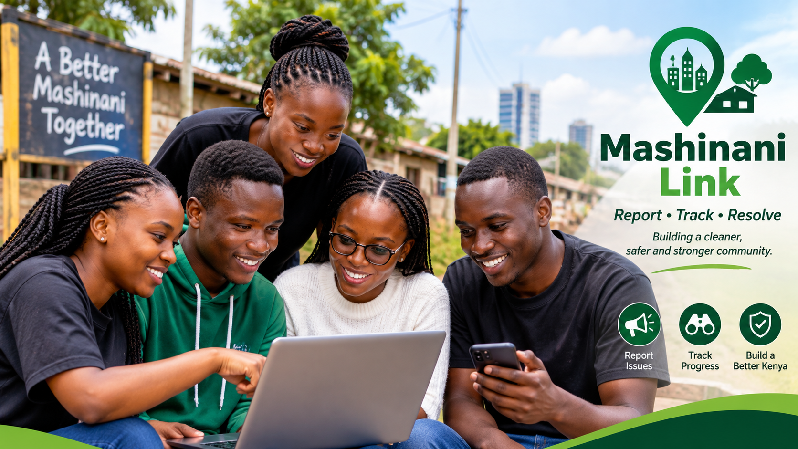

BUILDING BETTER COMMUNITIES
Let's Build Better Communities Together
Mashinani Link connects communities with the people responsible for addressing local infrastructure issues. Report problems, track progress and make your voice heard.

WHAT WE DO
How Mashinani Link Works
Making community reporting easier and more transparent.Report Issues
Report infrastructure problems in your community and provide details to help administrators understand them.
Track Progress
Follow your submitted reports and check their current status.
Community Action
Help improve communication between residents and those responsible for handling reported issues.